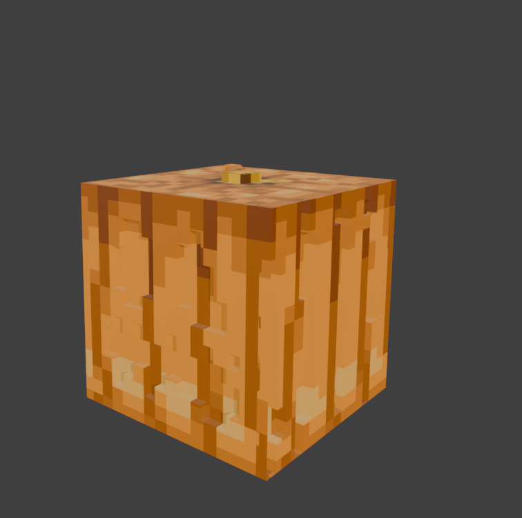
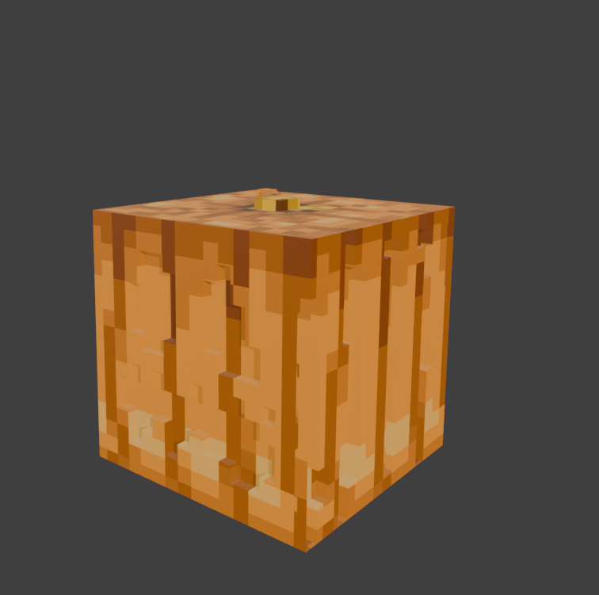

BLENDER
Odlučio sam napraviti 3D model u Blenderu. Cilj je bio napraviti detaljniji model Minecraft kocke koja će imati i teksturu odabranog modela. Odabrao sam model bundeve tj. pumpkin.
- Odlučio sam koristiti već izrađenu kocku. Prvo sam uvezao sliku koju ću koristiti kao teksturu za model
- Uvezenu sliku sam duplicirao više puta tako da imam dovoljno slika za svaku stranu kocke
- Slike sam micao pomoću tipke G(Grab), a rotirao sam ih pomoću tipke R(rotate). Možemo rotirati objekt za svaku os ovisno koju smo os odabrali pritiskajući tipke X, Y, Z. Slike sam pozicirao zasebno na svaku stranu kocke
- Zatim sam prešao iz objekt mode u edit mode. Pomoću poziciranih slika sam odabrao dijelove koje želim istisnuti pomoću alata Extrude.
- Zatim modelu dodajem materijal uvozom slika. Pomoću alata UV editing teksturu pomičem na željenu lokaciju
- Rezultat:
 
